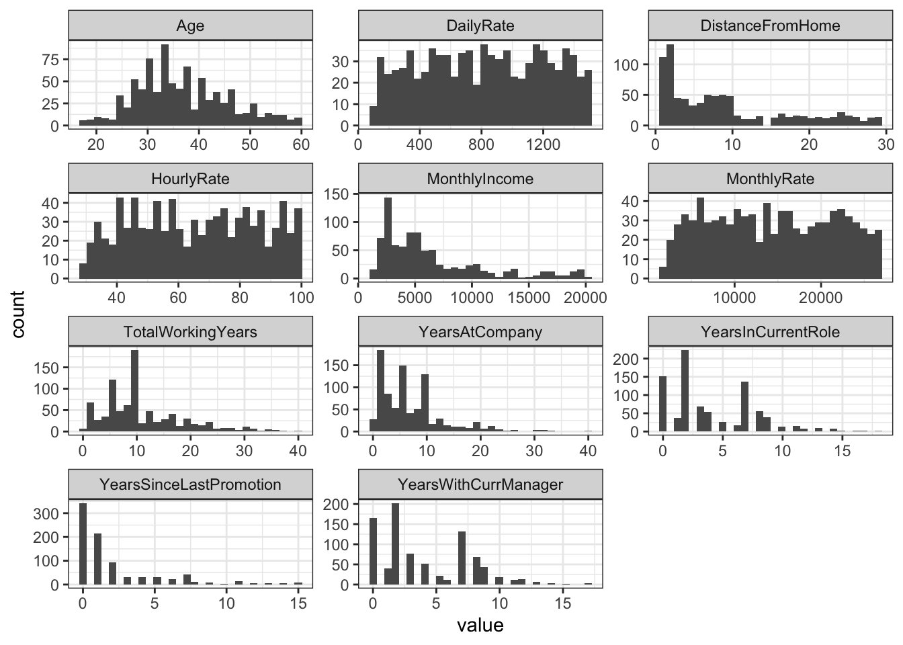

library(tidyverse)
library(gridExtra)
library(broom)
library(class)
library(caret)
library(e1071)
theme_set(theme_bw())Predicting Employee Attrition
An Analysis of Key Factors Leading to Employee Turnover
Introduction
The specific goals of this analysis are to:
Identify the top three factors that contribute to attrition
Learn about any job role specific trends that may exist in the data set (e.g., “Data Scientists have the highest job satisfaction”).
Provide any other interesting trends and observations from your analysis.
Build a model to predict attrition
Executive Summary
To be filled in
Libraries and Data Loading
employeeData = read_csv("https://raw.githubusercontent.com/ayule89/SMU_DDS_CaseStudy2/main/Data/CaseStudy2-data.csv")1. Identifying the top three factors that contribute to attrition
How many of the 870 employees in the data actually left?
There were 140 out of 870 employees (16%) that left.
employeeData |> count(Attrition)# A tibble: 2 × 2
Attrition n
<chr> <int>
1 No 730
2 Yes 140Screening all variables to visually investigate which parameters are the highest indicators of attrition
There are a number of variables that could attribute to employee attrition. We will first visually screen each of the variables to look for potential leading indicators. The full list of variables includes:
colnames(employeeData) [1] "ID" "Age"
[3] "Attrition" "BusinessTravel"
[5] "DailyRate" "Department"
[7] "DistanceFromHome" "Education"
[9] "EducationField" "EmployeeCount"
[11] "EmployeeNumber" "EnvironmentSatisfaction"
[13] "Gender" "HourlyRate"
[15] "JobInvolvement" "JobLevel"
[17] "JobRole" "JobSatisfaction"
[19] "MaritalStatus" "MonthlyIncome"
[21] "MonthlyRate" "NumCompaniesWorked"
[23] "Over18" "OverTime"
[25] "PercentSalaryHike" "PerformanceRating"
[27] "RelationshipSatisfaction" "StandardHours"
[29] "StockOptionLevel" "TotalWorkingYears"
[31] "TrainingTimesLastYear" "WorkLifeBalance"
[33] "YearsAtCompany" "YearsInCurrentRole"
[35] "YearsSinceLastPromotion" "YearsWithCurrManager" Before investigating attrition across each variable, some of the numerical scales will need to put into various bins to make analysis easier. In order to determine appropriate bins, we’ll first plot histograms of the numerical variables, which include: Age, DailyRate, DistanceFromHome, HourlyRate, MonthlyIncome, MonthlyRate, TotalWorkingYears, YearsAtCompany, YearsInCurrentRole, YearsSinceLastPromotion, YearsWithCurrManager.
employeeData |>
select(Age, DailyRate, DistanceFromHome, HourlyRate, MonthlyIncome, MonthlyRate, TotalWorkingYears, YearsAtCompany, YearsInCurrentRole, YearsSinceLastPromotion, YearsWithCurrManager) |>
pivot_longer(cols = everything(), names_to = "column", values_to = "value") |>
ggplot(aes(x = value)) +
geom_histogram() +
facet_wrap(~column, scales = 'free', ncol = 3)`stat_bin()` using `bins = 30`. Pick better value with `binwidth`.
Based on visually inspecting the histograms, the following bins for various numerical variables will be used:
- Age (5 years)
- Daily rate (400 dollars)
- Distance from home (5 miles)
- Hourly rate (20 dollars)
- Monthly income (5,000 dollars)
- Monthly rate (5,000 dollars)
- Total working years (5 years)
- Years at company (5 years)
- Years in current role (5 years)
- Years since last promotion (5 years)
- Years under current manager (5 years)
employeeDataWithBuckets = employeeData |>
mutate(
Age = round(Age/5)*5,
DailyRate = round(DailyRate/400)*400,
DistanceFromHome = round(DistanceFromHome/5)*5,
HourlyRate = round(HourlyRate/20)*20,
MonthlyIncome = round(MonthlyIncome/5000)*5000,
MonthlyRate = round(MonthlyRate/5000)*5000,
TotalWorkingYears = round(TotalWorkingYears/5)*5,
YearsAtCompany = round(YearsAtCompany/5)*5,
YearsInCurrentRole = round(YearsInCurrentRole/5)*5,
YearsSinceLastPromotion = round(YearsSinceLastPromotion/5)*5,
YearsWithCurrManager = round(YearsWithCurrManager/5)*5)Now we’ll go through and create plots of each variable showing the breakdown between attrition to visually look for any strong relationships
# Helper function that creates a plot showing the breakdown in attrition for a given variable across it's possible values
findAttritionBreakdown = function(df, colName) {
df |>
group_by(!!sym(colName)) |>
count(Attrition) |>
ungroup() |>
ggplot(aes(x = !!sym(colName), y = n, fill = Attrition)) +
geom_col(position = "fill") +
coord_cartesian(ylim = c(0, 0.55))
}
# Test the function
#findAttritionBreakdown(employeeDataWithBuckets, "DistanceFromHome")
cols = colnames(employeeData)
# Drop columns that we don't want to include in the analysis (ID, Attrition, EmployeeCount, EmployeeNumber, Over18, StandardHours)
cols = cols[c(-1, -3, -10, -11, -23, -28)]
# Create a list of plots across all of the columns using the map function from the purr package
plots = map(cols, function(col) findAttritionBreakdown(employeeDataWithBuckets, col))
# Display plots on one page
grid.arrange(grobs = plots, ncol = 3)
Based on examining the plots above, the following key variables were identified:
- Age
- BusinessTravel
- DistanceFromHome
- Education
- EnvironmentSatisfaction
- JobInvolvment
- JobRole
- JobSatisfaction
- MaritalStatus
- NumCompaniesWorked
- OverTime
- StockOptionLevel
- TotalWorkingYears
- WorkLifeBalance
- YearsWithCurrManager
In order to quantitatively determine the top 3 variables influencing attrition, we’ll build a logistic regression model using the variables above. Before using the results of that regression to determine top variables influencing attrition, we’ll first use cross validation to determine the type of accuracy that can be achieved using logistic regression.
# Train a generalized linear model using a binomial family to perform logistic regression
set.seed(1234)
model = train(Attrition ~ Age + BusinessTravel + DistanceFromHome + DistanceFromHome + Education + EnvironmentSatisfaction + JobInvolvement + JobRole + JobSatisfaction + MaritalStatus + NumCompaniesWorked + OverTime + StockOptionLevel + TotalWorkingYears + WorkLifeBalance + YearsWithCurrManager, data = employeeData, method = "glm", family = "binomial", trControl = trainControl(method = "LOOCV"))
# Summarize the results to determine the possible accuracy
modelGeneralized Linear Model
870 samples
15 predictor
2 classes: 'No', 'Yes'
No pre-processing
Resampling: Leave-One-Out Cross-Validation
Summary of sample sizes: 869, 869, 869, 869, 869, 869, ...
Resampling results:
Accuracy Kappa
0.8850575 0.4852071Using cross validation on our logistic regression, we can achieve an accuracy of over 88% which is high enough to warrant further use of the model to determine key variables influencing attrition.
# Change Attrition (no/yes) into numerical values to work within the glm function
employeeDataForLogisticRegression = employeeData |>
mutate(Attrition = ifelse(Attrition == "No", 0, 1))
# Fit the logistic regression model
model = glm(Attrition ~ Age + BusinessTravel + DistanceFromHome + DistanceFromHome + Education + EnvironmentSatisfaction + JobInvolvement + JobRole + JobSatisfaction + MaritalStatus + NumCompaniesWorked + OverTime + StockOptionLevel + TotalWorkingYears + WorkLifeBalance + YearsWithCurrManager, family = "binomial", data = employeeDataForLogisticRegression)
# Use the results of the model fitting along with the broom package which collects model metrics into data frames to quantitatively determine the top parameters
tidy(model) |>
filter(p.value < 0.2) |>
arrange(desc(abs(estimate)))# A tibble: 17 × 5
term estimate std.error statistic p.value
<chr> <dbl> <dbl> <dbl> <dbl>
1 JobRoleResearch Director -1.95 1.19 -1.63 1.02e- 1
2 OverTimeYes 1.85 0.240 7.72 1.21e-14
3 JobRoleManufacturing Director -1.78 0.858 -2.08 3.79e- 2
4 JobRoleSales Representative 1.71 0.581 2.94 3.30e- 3
5 (Intercept) 1.66 1.11 1.49 1.37e- 1
6 MaritalStatusSingle 1.41 0.472 2.99 2.77e- 3
7 BusinessTravelTravel_Frequently 1.27 0.462 2.75 6.01e- 3
8 JobRoleHuman Resources 1.07 0.713 1.50 1.34e- 1
9 MaritalStatusMarried 0.911 0.390 2.34 1.94e- 2
10 JobInvolvement -0.776 0.160 -4.86 1.19e- 6
11 BusinessTravelTravel_Rarely 0.539 0.412 1.31 1.92e- 1
12 WorkLifeBalance -0.516 0.158 -3.28 1.05e- 3
13 JobSatisfaction -0.443 0.104 -4.28 1.88e- 5
14 EnvironmentSatisfaction -0.250 0.104 -2.40 1.64e- 2
15 NumCompaniesWorked 0.176 0.0485 3.63 2.85e- 4
16 DistanceFromHome 0.0426 0.0139 3.06 2.19e- 3
17 Age -0.0308 0.0174 -1.77 7.66e- 2Based on the results from the logistic regression model, the following variables are found to be the most important when determining possible employee attrition:
- Job role
- Most notably sales representative positions see very high attrition, while research and manufacturing directories typically have very little attrition
- Over time
- Employees that work overtime are much more likely to have attrition than those that do not
- Marital status
- Single employees are much more likely to have attrition than those that are married and even more so than those that are divorced
Additional notable variables included:
- Business travel - regular travel was highly correlated with higher attrition
- Job involvement - low job involvement was highly correlated with higher attrition
- Work life balance - lower work life balance was highly correlated with higher attrition